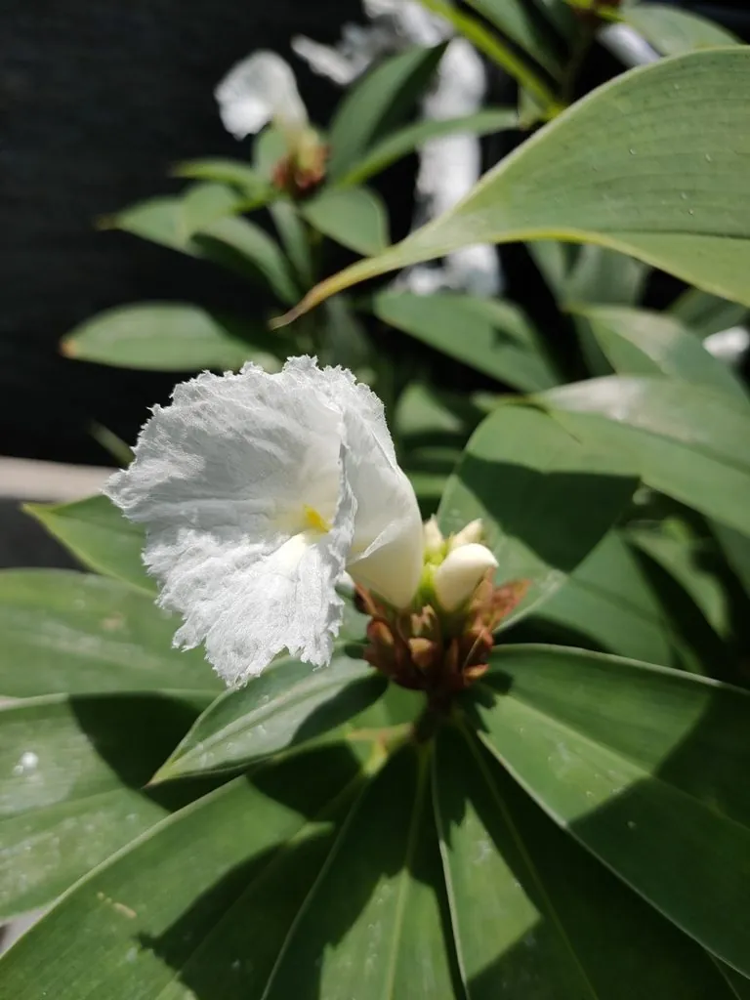

花卉与草本 · 植物界
闭鞘姜 Costus speciosus

闭鞘姜科闭鞘姜属多年生草本，茎鞘闭合、花冠白色、唇瓣橙黄，穗状花序如宝塔，是南方常见的观花与药用植物。
- 分类
- 门被子植物门纲木兰纲目姜目科闭鞘姜科属闭鞘姜属
- 栖息环境
- 热带亚洲的林下、溪边与灌丛，喜温暖湿润、半阴环境
- 地理分布
- 中国华南、云南及东南亚、印度等地
- 保护级别
- IUCN 暂无评估；分布较广，野生种群稳定
物种志
闭鞘姜为多年生草本，高 1–2 米，具块状根状茎，茎粗壮，叶鞘闭合包裹茎干，这是它得名的原因。叶片螺旋状排列，长椭圆形至披针形，长 15–30 厘米，上面深绿色，下面被短柔毛。穗状花序顶生，呈圆锥状或宝塔状，长 10–20 厘米，苞片红色，花冠白色，唇瓣橙黄色、边缘皱波状，十分醒目。
本种原产热带亚洲，分布于中国华南、云南及东南亚、印度等地，生于林下、溪边与灌丛，喜温暖湿润、半阴的环境。它花序形似宝塔、白花黄唇，是南方庭园与药园常见的植物；根状茎入药，有清热解毒、利水消肿之效。闭鞘姜不耐寒，北方需温室栽培；其茎鞘闭合、叶片螺旋排列，是识别本种的重要特征。
形态与习性
- 株高1–2 米，茎粗壮，叶鞘闭合
- 花期7–10 月，花冠白色、唇瓣橙黄
- 花序顶生，宝塔状，长 10–20 厘米
- 光照喜半阴，忌强光暴晒
- 水分喜湿润，需充足浇水
- 土壤疏松肥沃、排水良好的壤土
- 主要用途庭园观赏、药园栽培与根茎入药
趣味知识
- 闭鞘姜的叶鞘完全闭合包裹茎干，不像普通姜科植物那样叶鞘开裂。
- 它的花序层层叠叠像一座小宝塔，白色花冠配橙黄唇瓣非常醒目。
- 闭鞘姜的根状茎在民间入药，用于清热解毒、利水消肿。
- 它原产热带亚洲，在中国华南的溪边林下常成片生长。